Shape and Outliers I
For each histogram below, describe the shape and presence of outliers.
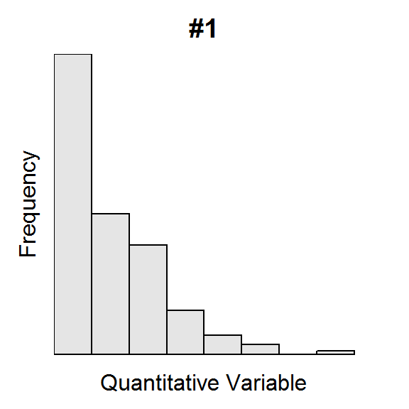
 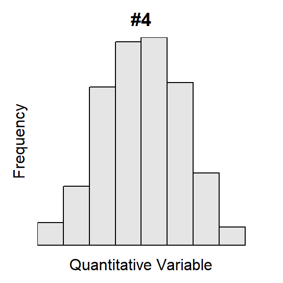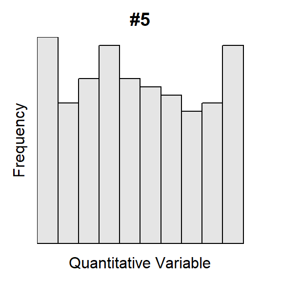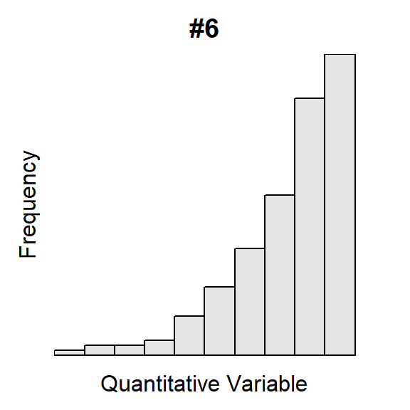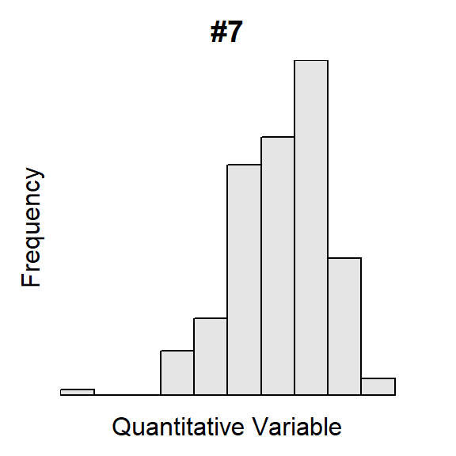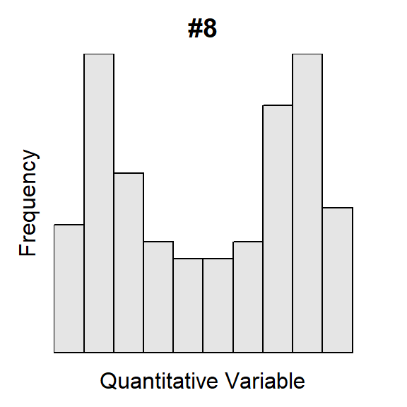
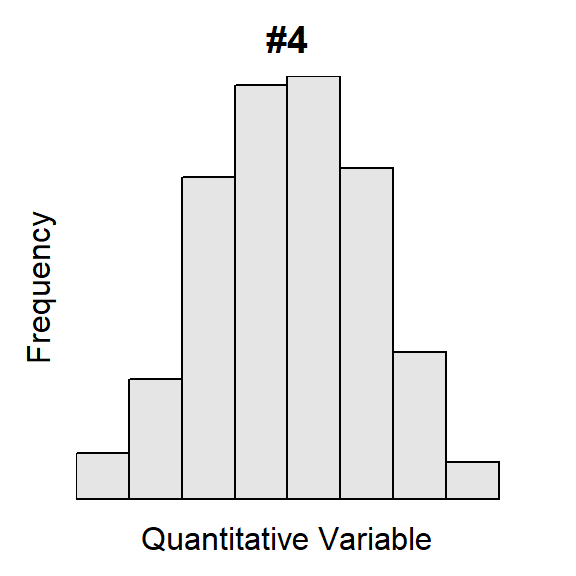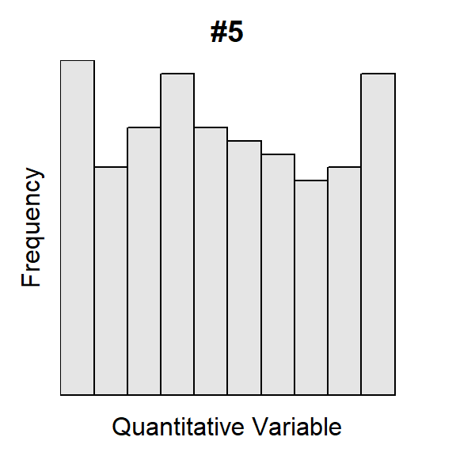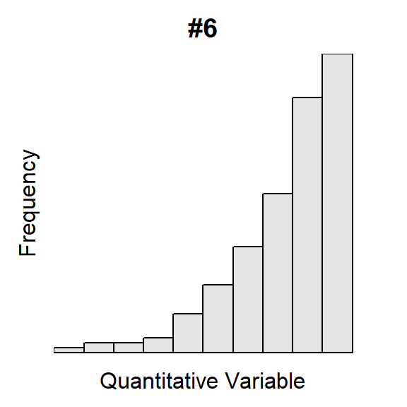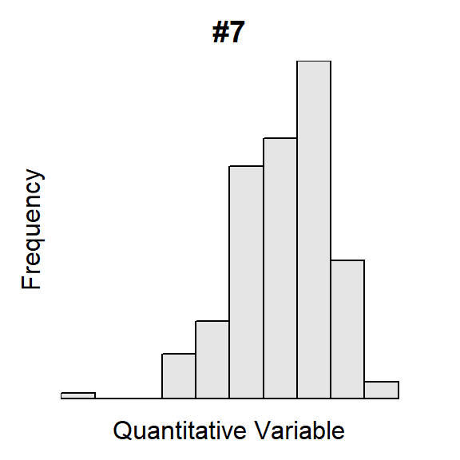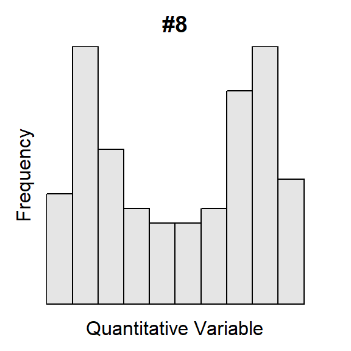
For each histogram below, describe the shape and presence of outliers.
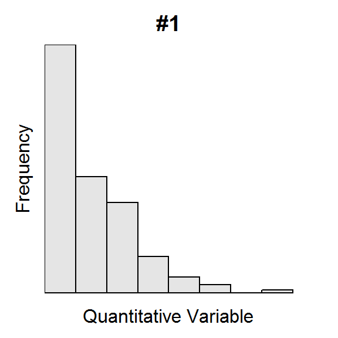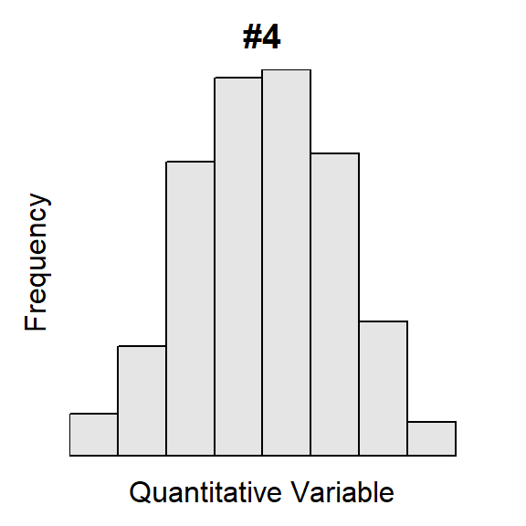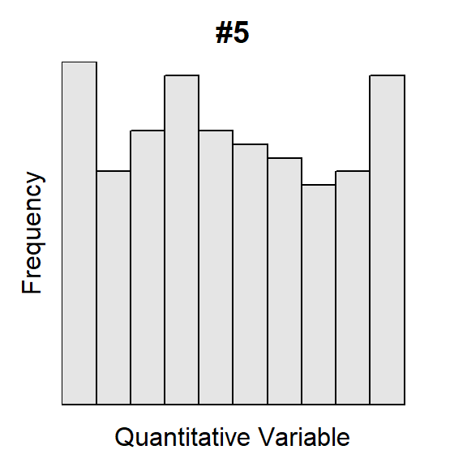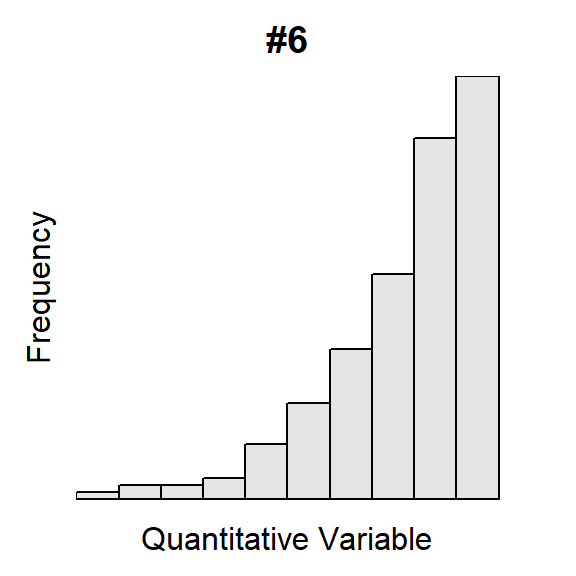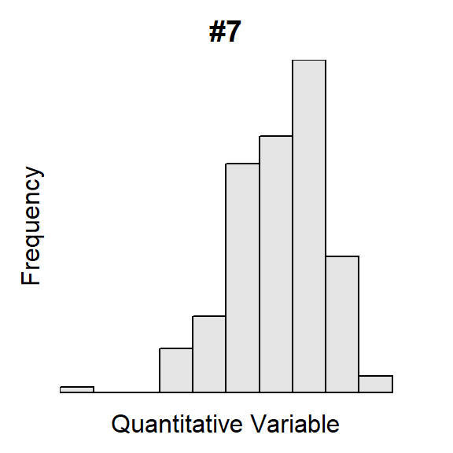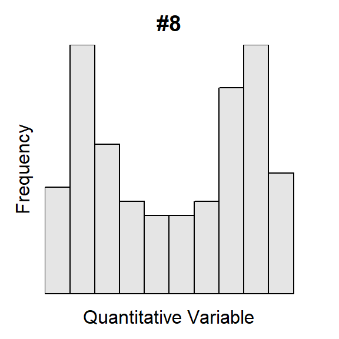

The U.S. Census asked individuals 16 years old and older “How long in minutes is your one-way commute to work each day?”. The mean for individuals from each state was computed and is plotted in the histogram below.

Use this histogram to answer these questions.

Scientists were concered about the overexploitation of Dungeness Crabs (Cancer magister) in some California waters. To better manage this species they examined the post-molt carapace length from a large sample of crabs. Their results are displayed in the histogram below.

Use this histogram to answer these questions.
The U.S. Census asked individuals 16 years old and older “How long in minutes is your one-way commute to work each day?”. The mean for individuals from each state was recorded with summary results shown in Figure 1 and Table 1. Perform a thorough EDA with these results.
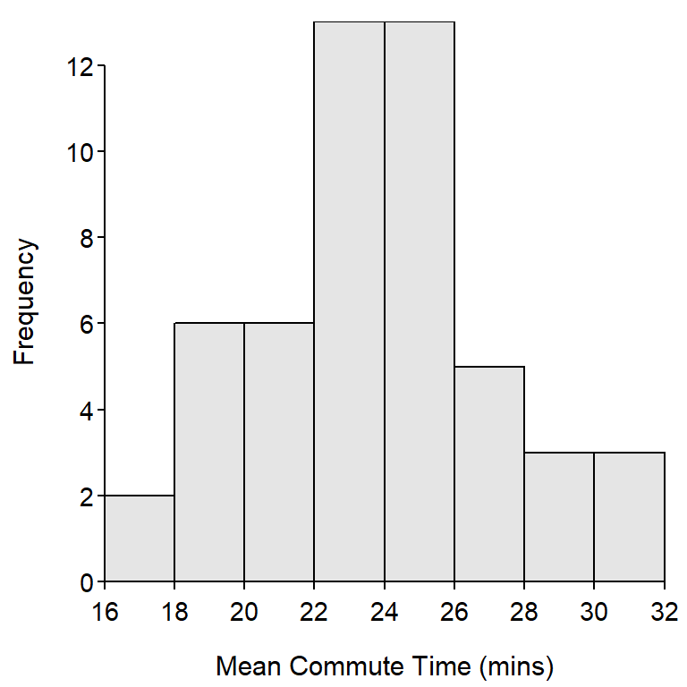
Figure 1: Histogram for the mean commute time (mins) for each state.
Table 1: Summary statistics for the mean commute time (mins) for each state.
n mean sd min Q1 median Q3 max
51.00 23.75 3.54 16.90 21.65 23.80 25.80 32.00
Scientists were concered about the overexploitation of Dungeness Crabs (Cancer magister) in some California waters. To better manage this species they examined the post-molt carapace length from a large sample of crabs. Their results are displayed in Figure 2 and Table 2. Perform a thorough EDA with these results.
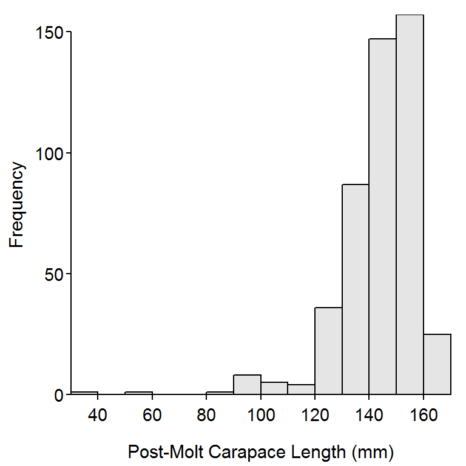
Figure 2: Histogram for post-smolt carapace length (mm) of Dungeness crab collected in California.
Table 2: Summary statistics for post-smolt carapace length (mm) of Dungeness crab collected in California.
n mean sd min Q1 median Q3 max
472.0 143.9 14.6 38.8 138.0 147.4 153.4 166.8  Coarse woody debris (CWD) in lakes is important for aquatic systems as it provides refuge for young fish and invertebrates as well as providing areas for periphyton to grow. Coarse woody debris was studied in the north basin of Allequash Lake in northern Wisconsin. Among other things, the researchers recorded the diameter (cm) of CWD found in the lake littoral zone and a qualitative measure of the degree to which the location where the CWD was found was exposed to winds (low or medium). The data (sampled from information on the North Temperate Lakes Long Term Ecological Research website) they observed are shown below.
Coarse woody debris (CWD) in lakes is important for aquatic systems as it provides refuge for young fish and invertebrates as well as providing areas for periphyton to grow. Coarse woody debris was studied in the north basin of Allequash Lake in northern Wisconsin. Among other things, the researchers recorded the diameter (cm) of CWD found in the lake littoral zone and a qualitative measure of the degree to which the location where the CWD was found was exposed to winds (low or medium). The data (sampled from information on the North Temperate Lakes Long Term Ecological Research website) they observed are shown below.
diameter 21 15 18 23 18 17 19 17 15 22 16 20 16 17 18 15 16 24 24 23 exposure med med med low med low med med med med med med low med med med med low med med diameter 18 17 19 17 17 15 17 18 19 31 25 15 17 34 16 18 19 15 16 15 exposure med med med med med med med med low med med med med low low med med med low med diameter 20 23 34 20 17 20 15 34 18 24 exposure med med low med med med med med med med
Enter the data into Excel, save as a CSV, and load the data into R. [HINT: these are the same data that you entered in a previous class exercise. Use that file and recycle the portion of that R script that you used to load the data.] Use this information to answer the following questions.
diameter.diameter separately for the low- and medium-exposure sites. DePaolo and Robinson (2011) reported on data collected from a cafe run by business students at Indiana State University. The cafe was begun because a commercial vendor had closed a similar business. The group of business students opened a replacement business and carefully monitored sales and costs over a ten-week period during the spring semester of 2010. The students recorded extensive data in cafedata.xls (alt. link to data) that is described in detail here. One aspect of their study was to record the total number of coffees and sodas sold per day and the maximum daily temperature (F). Download these Excel data with the line from above, rename the variables (column headings) to include no spaces, add a variable that represents the days since start of the cafe, replace all
DePaolo and Robinson (2011) reported on data collected from a cafe run by business students at Indiana State University. The cafe was begun because a commercial vendor had closed a similar business. The group of business students opened a replacement business and carefully monitored sales and costs over a ten-week period during the spring semester of 2010. The students recorded extensive data in cafedata.xls (alt. link to data) that is described in detail here. One aspect of their study was to record the total number of coffees and sodas sold per day and the maximum daily temperature (F). Download these Excel data with the line from above, rename the variables (column headings) to include no spaces, add a variable that represents the days since start of the cafe, replace all na values with NA, save the file in CSV format, load the data into R, refactor the day of the week variable to be in proper order (see section 4.2.2 in the book), and answer the questions below.

Municipal wastewater treatment plants are required by law to monitor their discharges into rivers and streams on a regular basis. Concern about the reliability of data from one of these self-monitoring programs led to a study in which samples of effluent were divided and sent to two labs – a State of Wisconsin lab and a private commercial lab. Each lab measured the Biological Oxygen Demand (BOD) on the effluent sample sent to them. Enter these data (in stacked format with two columns labeled lab and bod) into a CSV file and read into an object named df in R.
State -- 6,6,8,11,18,20,28,33,34,43,71 Private -- 15,25,28,29,34,35,36,39,42,44,54

The University of North Carolina math department is noted for “giving out” low grades. To examine this, the GPA from a random sample of 22 math classes and 29 “other” university classes (from the last year) was collected and recorded in UNCGrades.csv. Use these data to answer the following questions.